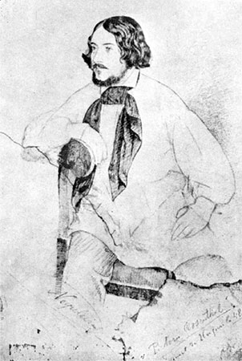
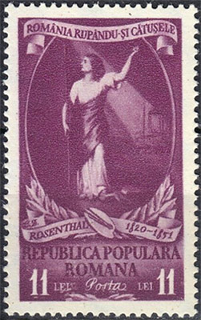
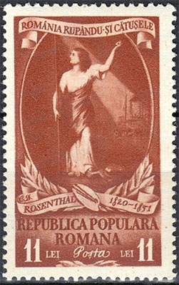
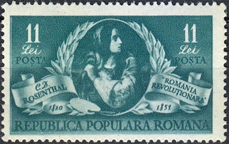
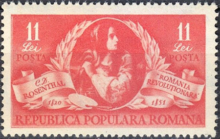
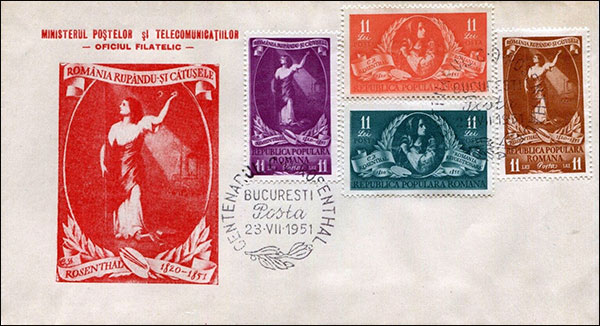
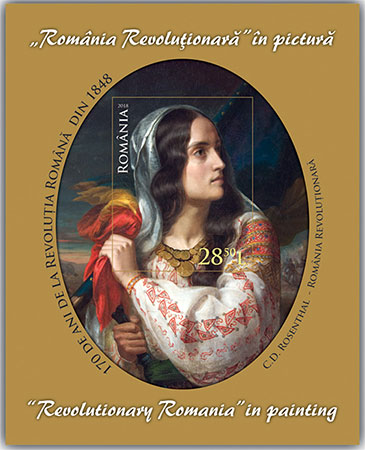
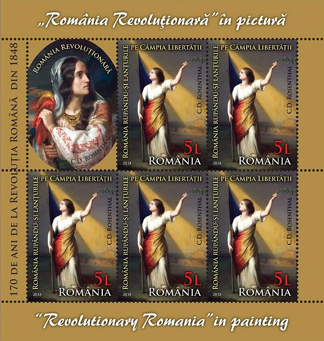
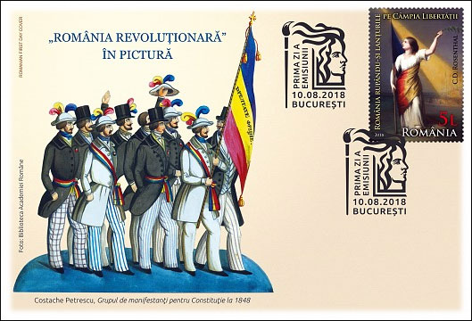

Daniel Rosenthal - a revolutionary Romanian painter
Victor Manta, PWO
In 1878, Maria Rosetti praised her deceased friend: "[Rosenthal was] one of the best and the most loyal man that God created after His image. He died for Romania, for its liberties; he died for his Romanian friends. [...] This friend, this son, this martyr of Romania is an Israelite. His name was Daniel Rosenthal." The Romanian Post commemorated this talented painter on two occasions, and for this reason, but also because of his tumultuous life and his tragic and premature death, I decided to dedicate this tribute page to this celebrated fighter for liberty.

Fig. 1 Daniel Rosenthal, by Ion NeguliciConstantin Daniel Rosenthal (1820-1851) was born in Budapest, in the family of prosperous Jewish merchants. His passion for art was not appreciated by the family, and young Rosenthal became a traveler across Europe in search of artistic inspiration. In Vienna he met the aristocrat C.A. Rosetti and the painter Ion Negulici, who talked with him about the countries over the Carpathians and about the national ideal of the Romanians. He visited Bucharest in the early 1840s, and then left with the group of Wallachian patriots in Paris. He was fascinated by the national pathos of Romanians, especially thanks to his friendship with C.A. Rosetti. Rosenthal participated in the Revolution of 1848 in Wallachia, sometimes performing dangerous missions. [1]


Fig. 2 1951. Rosenthal. Romania Breaking handcuffs. Mi. 1268 - 1269In late September, after Ottoman troops intervened against the revolution, most radicals were arrested and transported on board of small vessels on the Danube, to exile to various locations. Rosenthal made public his request to join them but was answered that Austrian protection still applied to him, and, although he requested to be viewed as a Wallachian, was denied permission to board. Subsequently, he and Rosetti's wife Maria followed the ships on shore from Giurgiu to Sviniţa, where they convinced the Austrian mayor to disarm the Ottoman guards and allow the prisoners to go free. Rosenthal returned to Pest-Buda, which was still witnessing the Hungarian revolution at the time, left for Paris in May 1850, and subsequently joined Romanian exiles in carrying out propaganda work. …


Fig. 3. 1951. Rosenthal. Revolutionary Romania. Mi. 1270-1271His plan was divulged by spies of the Second French Republic (already under the authority of Prince-President Louis-Napoléon Bonaparte), who read Rosenthal's correspondence in Paris; the Austrians arrested the painter during his presence in Pest-Buda, citing his "imprudent political statements". Pressured to reveal his connections and refusing to comply, Rosenthal was tortured to death; his body was never returned to his family. [2]

Fig. 4. Rosenthal - Birth Centenary FDCAccording to another source, when sent on a secret mission to Transylvania, he was arrested and lodged in the Pest prison, where he committed suicide in order not to betray or, according to yet other sources, he was assassinated.
In 1951 appeared a set of postage stamps dedicated to the commemoration of the centenary of the death of the painter C.D. Rosenthal. The set is consisting of four stamps, which reproduce two of the painter's paintings, in changed colors: "Revolutionary Romania" and "Romania Breaking handcuffs". Fig. 2 - 4.
It is very curious how the communist censorship of that time approved the appearance of these stamps, which for several reasons did not correspond to the moral-political values of the time. First, the painter's model for the two paintings was his friend's C.A. Rosetti wife. Morever, Maria Rosetti was English, and it is difficult to understand how communist propaganda accepted that a painting symbolizing Romania should be made by a Jew who had an English woman as his model, in an era in that xenophobia and anti-Semitism were present.
Fig. 5. 2018. Rosenthal. Revolutionary Romania. S/S. Mi. B117But the most important thing for which the censorship should not have approved the stamps is that the painting "Romania breaking its shackles" represents a temple masonic in the second plan, one that receives the light. The Masonic symbol in the painting is more than obvious and that is why the permissive attitude of censorship is inexplicable. In fact, the painting is reproduced on Romanian postage stamps also in 1998, when a cover was issued on the occasion of the Tricolor Day. This time the layout designer, by the positioning of the text and by the brightness of the picture, did unintelligible the Masonic temple found in the background. [3]

Fig. 6. 2018. Rosenthal. Revolutionary Romania. MS. Michel 7400Another source explains that, in 1850, the artist painted the canvas "Revolutionary Romania", which became, over time, representative for the illustration of the national ideal. The artist chose his good friend Maria Rosetti as a model, whom he portrayed in a popular costume from the Muscel area. Rosenthal reproduced the elements of the blouse in detail, being the first painter to make the Romanian blouse ("ie" in Romanian) style famous. Around Maria Rosetti's neck was a rich sash, which expressed the wealth of the country, and a tricolor flag was placed over her right shoulder. The tricolor is also a symbol of the Revolution of 1848, being made from the combination of the flags of Moldova (red blue) and Wallachia (blue yellow). The owner of the two paintings was C.A. Rosetti, who, through will, left them by inheritance to the Romanian nation. They are permanently exhibited in the Modern Art Gallery of the National Museum of Art, Bucharest. [1]

Fig. 7. 2018. Rosenthal. Revolutionary Romania. FDCThe painting "Revolutionary Romania" was painted in Paris, where Rosenthal joined the Romanian revolutionaries in exile after the suppression of the 1848 movement in Wallachia. It is an allegorical representation of the social and national ideals that many European peoples shared in the middle of the 19th century. Maria Rosetti's bust is represented in the foreground, with the tricolor in her left hand and the hanger in her right. Married to C. A. Rosetti, Rosenthal's friend from his days in Vienna, Maria Rosetti, born Grant, had a romantic, Mediterranean temperament despite her Scottish origins. She played an important role in the release of the Romanian revolutionaries, taken prisoners by the Turks, thus becoming a symbol of the revolutionary movement in Wallachia. Dedicated and full of energy, she was a source of inspiration and a symbol of the revolutionary movement in Wallachia. It is no wonder that Rosenthal, the Budapest-born painter, made her his muse. The work depicts her in the Romanian folk costume in which she had disguised herself to follow the vessel carrying the Romanian revolutionaries. The picture full of pathos is characteristic of the romantic compositions that inspired Rosenthal. Maria Rosetti's face can also be seen in the small medallion in the center of a still life painted by Rosenthal, a sign that the artist's admiration for the young woman was probably deeper than he could have openly admitted. [4]
Sources
1. Romfilatelia, the presentation of the stamp issue dedicated to the painter Rosenthal.
https://www.romfilatelia.ro/en/revolutionary-romania-in-painting/2. Wikipedia. https://en.wikipedia.org/wiki/Constantin_Daniel_Rosenthal
3. Cristian Andrei Scăiceanu. The history of the philatelic movement in Romania, p. 514. Excerpt translated from Romanian.
https://www.academia.edu/43953346/Istoria_mi%C5%9Fc%C4%83rii_filatelice_din_Rom%C3%A2nia4. MNaR. Discover the works in the Gallery of Modern Romanian Art. Excerpt translated from Romanian.
https://mnar.ro/descopera/galerii-permanente/74-galeria-de-arta-romaneasca-moderna/lucrari-in-galeria-de-arta-romaneasca
Published: August 22, 2023 . Revised: August 22, 2023. |